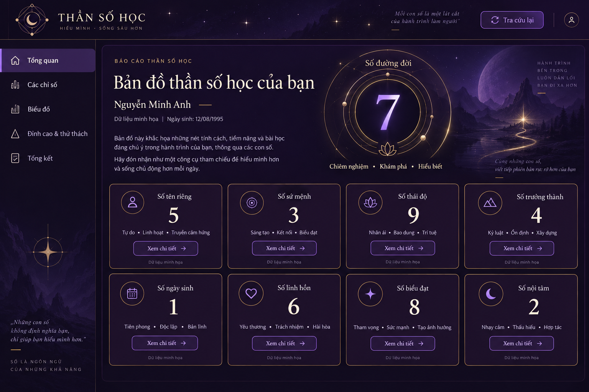

Thần số học · Tím huyền bí
Bộ ảnh đề xuất cho LongC1019I1/ThanSoHoc, nhánh master. Chưa triển khai vào website.
Luồng sử dụng
Nhập họ tên + ngày sinh → Kiểm tra hợp lệ → Tính toán → Tổng quan báo cáo
↳ Dữ liệu sai: báo lỗi tại trường → sửa và gửi lại
↳ Báo cáo: Mục lục ⇄ Chi tiết chỉ số / Biểu đồ / Đỉnh cao & thử thách / Tổng kết
↳ Tra cứu lại → Form ban đầu
↳ Mở báo cáo khi thiếu dữ liệu → Thông báo → Nhập thông tin
Ảnh xác định phong cách; tài liệu xác định hành vi; mã nguồn xác định dữ liệu. Không dùng số và diễn giải minh họa trong ảnh để tính báo cáo thật.
02 · Tổng quan

03 · Chi tiết chỉ số

04 · Biểu đồ và năng lượng

05 · Đỉnh cao và thử thách

06 · Tổng kết